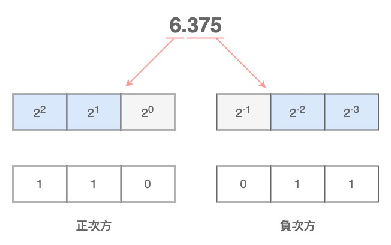
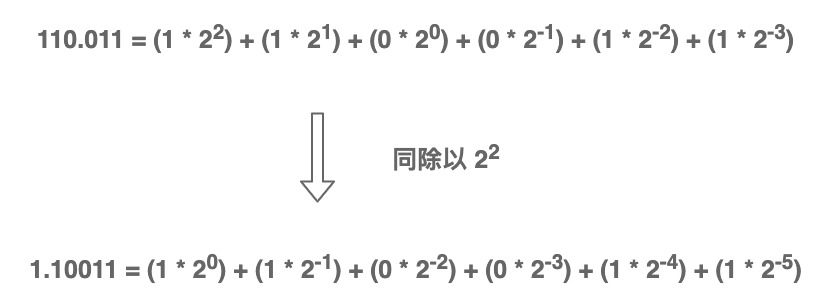
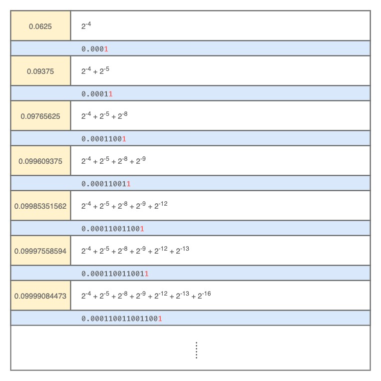
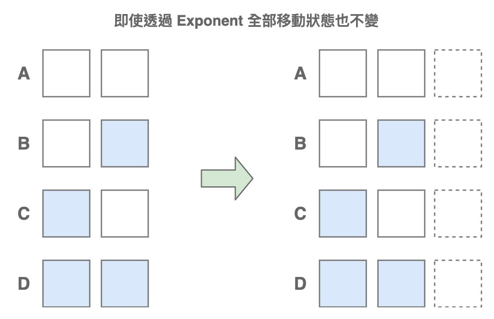

淺入淺出 Float
Float 俗稱浮點數，它相當於我們上課時學到的小數。
雖然在程式設計中是相當重要的概念，但很少有人會花心思去搞懂它，大多書籍也不會詳細解說 Float 的原理或儲存方式，更不用說為什麼浮點數計算時會出問題了。
IEEE754
先介紹目前業界中最通用的標準，由 William Morton Kahan 的研究而制定，他也因此被稱為「浮點數之父」。
這個規範定義了四種 Float 的表示方式：
- 單精度（ 32 bit ）
- 雙精度（ 64 bit ）
- 延伸單精度（ 43 bit 以上）
- 延伸雙精度（ 79 bit 以上，通常用 80 bit 實作）
IEEE 754 只有對單精度強制要求提供，其餘三種可選。不過目前大多數語言都有提供雙精度
儲存概念
在計算機的世界中萬物皆 bit ，無論整數或浮點數皆是如此。
只不過整數間無法切割， 1 ～ 10 只會有 10 個數字；小數間可以無限切割， 0 ～ 1 就擁有無限個小數，畢竟小數點後可以無限增加數字，卻對數值不會有太大的影響。
所以整數即使只單純用 bit 儲存也沒關係，例如 8 bit 可以表現出 28 種狀態，用在整數上可以表示 0 ～ 255 ；用在小數上則連 0 ～ 1 都表現不完，所以 Float 的儲存方式註定要與 Int 不同。
如果以單精度來看 32 bit 可以表現出約 40 億種狀態，但如前面所說的這連 0 ～ 1 之間都不夠用，必須使用特殊的格式才行，再加上考慮到極大值與極小值中間往往會塞很多無意義的 0 ，它們基本上只是浪費記憶體空間，所以使用了 Scientific notation （科學記號）的概念來保存。
科學記號是一種簡略地表示值的方法，好比說 1,234,500,000,000 -> 1.2345 * 1012 或是 0.00000054321 -> 5.4321 * 10-7
數值越大或越小時科學記號就越能發揮用途（節省無意義的 0 ），計算機科學中常常以 E 或 Exp （ Exponential ）來表示指數，也就是 10E ：
- 1.2345E12
- 5.4321E-7
在基於科學記號的概念， Float 儲存時的可以分為三個部分： Sign 、 Exponent 、 Fraction 。
Sign
用來表示 Float 是為正或負，因為只有兩種狀態（ + / - ）所以不論哪個精度都只需要 1 bit 表示。
Exponent
指數的數值，此處的基數不再是 10 而是 2 ，這與 Float 的計算方式有關。
要注意它儲存的不是實際的值而是偏移後的值， Exponent 處理時會加減一個 Bias （偏移值）， Bias 的算法為 2n-1 - 1 （ n 為 Exponet 的位元大小），以單精度為例的話就是 28-1 - 1 = 127 ，這麼做的原因可能是為了比較大小（排序）時的方便，因為可以直接看 bit 決定誰大。
存有號數 0b11111101 （ -3 ） 與 0b00000011 （ 3 ） 在比較時還需考慮正負數，而無號數 0b01111100 （ 124 ）與 0b10000010 （ 130 ）直接從高位的 bit 比就知道誰更大
Fraction
也稱為有效數，這裡是實際上數值的部分，換句話說浮點數的實際精度就是受此影響。
實際儲存
Float 在儲存時一樣先經過二位元處理再儲存，以 6.375 來當例子，整數部分可以拆解為 (1 * 22) + (1 * 21) + (0 * 20) ；分數部分可以拆解為 (0 * 2-1) + (1 * 2-2) + (1 * 2-3) ：

假設正負次方之間透過 . 來做隔離，那麼我們可以得到 6.375 的二位元 0b110.011 ，接著為了儲存到 Fraction 會將其轉換為科學記號形式：

這邊利用了科學記號的概念，將 Float 給統一規格化，只不過原本是用於十進制上，所以轉化為科學記號後整數部分不會大於 10 ，但 bit 是逢二進位所以變為整數部分不會大於 2 ，這也是 Exponent 的基數為 2 的原因。
加上二位元的世界裡全部 bit 都為 0 的數就只有 0 ，其它數絕對會在裡面出現一次 1 ：
- 0 -> 0b00000000
- 1 -> 0b00000001
- 7 -> 0b00000111
- 128 -> 0b10000000
- ⋯⋯
因此非 0 的數必定可以轉換為 0b1.xxx⋯⋯ 的形式，這樣儲存的時候還可以省略 1. （畢竟所有數都有）來多紀錄 1 bit 。
最終取得了 Exponent 與 Fraction 的值：
- Exponent = 2 + 127 = 129 （ 0b10000001 ）
- Fraction = 0b10011
用單精度的 Float 二位元表示：
| Sign | Exponent | Fraction |
|---|---|---|
| 0 | 10000001 | 10011000000000000000000 |
特殊規格
IEEE 754 也考量到許多特殊狀況，其一是展示的格式；其二是特殊值，可以參考下表：
| Exponent | Fraction | Mean |
|---|---|---|
| 全 0 | 全 0 | Zero |
| 非全 0 | 不限 | Normalized |
| 全 0 | 非全 0 | Denormalized |
| 全 1 | 全 0 | Infinaty |
| 全 1 | 非全 0 | Not a Number |
格式
Float 實際上擁有 Normalized （正規格式）與 Denormalized （非正規格式）兩種形式，前面介紹的是 Normalized 。
之所有會有 Denormalized 的主要原因在於正數最小值被當初 Fraction 偷了 1 bit 影響到，如果只有 Normalized 的話單精度最小值應該是：
| Sign | Exponent | Fraction |
|---|---|---|
| 0 | 00000000 | 00000000000000000000001 |
Exponent 的部分是 20-127 約為 5.8E-39 ，而 Fraction 前方必須加 1. 所以是 20 + 2-23 約為 1 ，最小值算出來是 5.8E-39 ，很明顯的那個 1. 影響了整個結果，它導致後面的 2-23 有跟沒有一樣，完全浪費掉 23 bit 。
基於此情況， IEEE 754 規定當 Exponent 為 0 但 Fraction 不為 0 時啟用 Denormalized 格式，這種格式下 Fraction 前方不用再加 1. 而 Exponent 則強制為 1 - Bias ，所以可以得到最小值為 2-23 * 2-126 約為 1.4E-45 。
Exponent 強制為 1 - Bias 的原因是為了與無 Denormalized 狀況下的最小值連接，理論上純 Normalized 最小值是 (20 + 2-23) * 2-127 ，而 Denormalized 的最大值是 2-1 * 2-126 ， 2-23 影響太小可以無視，所以這兩者值近乎一樣
不過因為多了 Denormalized 所以目前 Normalized 最小值是 Exponent 為 1 但 Fraction 為 0 ，也就是 20 * 21-127 約 1.17E-38 。
特殊值
特殊值實際上就是 Zero 、 Inf 、 NaN 三者，而雖然那個表格中少了 Sign 這個符號位，但它是有作用的。
因此 Float 有了很詭異的 -0 值，在理論上它應該與 0 相等，而無窮數的部分比較正常，分為 +Inf 與 -Inf ，不會有語意上的問題。
NaN （非數值）這個概念最早就是來自於 IEEE 754 規範，通常指的是無法被表示的數字，好比說：
1 | var a, b float32 |
NaN 因其名 Not a Number 並不是一個固定的數值，換句話說它與誰做比較都不相等，即使是跟自己：
1 | var a, b float32 |
NaN 應被視為運作失敗的結果而不能跟任何數值做比對，通常來說程式語言都會提供相應的函式以供辨識。
浮點數的精度失真
浮點數透過 2 的負次方來組成，但是你會發現連最簡單的 0.1 都不可能組合成功：

不管如何擴充永遠也加不到剛好 0.1 ，而 Float 的位元數量有限不可能無窮的保存下去，最終就會出現精度遺失的狀況，下面是單精度的 0.1 二位元：
| Sign | Exponent | Fraction |
|---|---|---|
| 0 | 01111011 | 10011001100110011001101 |
依照前面介紹過的 Normalized 來轉換會得到 Exponent = 2123-127 ； Fraction = 1.6000000238 ，兩者相乘 1.6000000238 * 2-4 = 0.1000000015 ，即使切換成雙精度也不會改變結果，這也可以說是十進位與二進位的分數轉換天生就有問題。
精度位數
浮點數在某個範圍是精確的，但超過之後的結果就無法保證，其原因當然在 Fraction 身上。
拿單精度來說， 23 個 bit 可以表示出 8,388,608 種狀態，雖然 Float 的機制多偷 1 bit 也許該算作 24 bit ，但實際上那個 bit 等於被強制固定住，並沒有實質意義在。
總之，狀態表達雖然高達 7 位數字，但實際上能準確表達的範圍只有 6 位。這是因為在 8,388,608 之後的狀態就無法表示（好比說 9,000,000 ），所以單精度雖然某些 7 位數也可以準確表達，但因為不是每個 7 位數都可以，正常還是會說單精度的有效位數為 6 位。
有人可能無法理解為什麼 Fraction 狀態數量會與 Float 的有效位數有關，因為不是還有 Exponent 在嗎？
Exponent 只能 “ 移動 “ Fraction 的位置而已，狀態數量是固定的，好比說 2 bit 可以表現 4 種狀態，往前移動之後還是只有 4 種：

很明顯的移動後增加或減少的 bit （概念上的）不會影響到 Fraction 所能表示的狀態，這就是為何 Exponent 影響不到精度的原因。